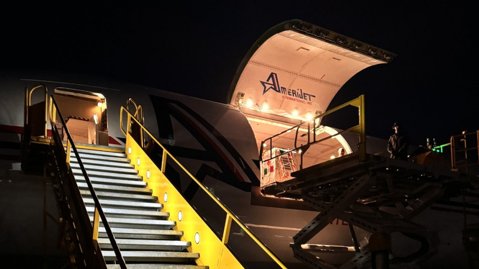

ÚLTIMAS NOTÍCIAS RS
Itens para emergências humanitárias doados pelo governo italiano chegam ao RS.
Publicado em 30/05/2024
O governo italiano enviou doações para o Rio Grande do Sul. A aeronave com equipamentos emergenciais de ajuda humanitária chegaram à Base Aérea de Canoas na noite de quarta-feira (29/5). O titular da Secretaria de Desenvolvimento Econômico, Ernani Polo, foi até o local para a entrega oficial da carga ao Estado, que também foi acompanhada pelo embaixador da Itália no Brasil, Alessandro Cortese, e pelo cônsul-geral da Itália em Porto Alegre, Valerio Caruso.
A iniciativa foi da Cooperação e o Desenvolvimento do Ministério das Relações Exteriores e da Cooperação Internacional da Itália (Maeci) em colaboração com o Programa Alimentar Mundial (PAM) da Organização das Nações Unidas.
Entre os itens enviados estão itens especializados para emergências humanitárias, como medicamentos e suprimentos médicos para o tratamento de cerca de 100 mil pessoas pelo período de 3 meses, tendas para 4, 5 mil pessoas, cinco geradores de 60 kVA/h, dois purificadores capazes de produzir 64 mil litros de água potável por dia e quatro tanques de 100 mil litros para armazenamento de água potável. Os itens doados chegam a 30 toneladas.
"Temos uma relação forte com a comunidade italiana que vive no RS, da mesma forma que são parceiros comerciais em alguns setores econômicos. Essa ajuda humanitária consolida nossos laços e demonstra solidariedade italiana com o nosso povo. Nosso agradecimento por essa ajuda que será essencial para o atendimentos da nossa população”, disse Polo.
Atualmente, o Rio Grande do Sul abriga 120 mil cidadãos italianos, e estima-se que haja no Estado cerca de 4,5 milhões de pessoas com descendência italiana, correspondendo a 40% da população.